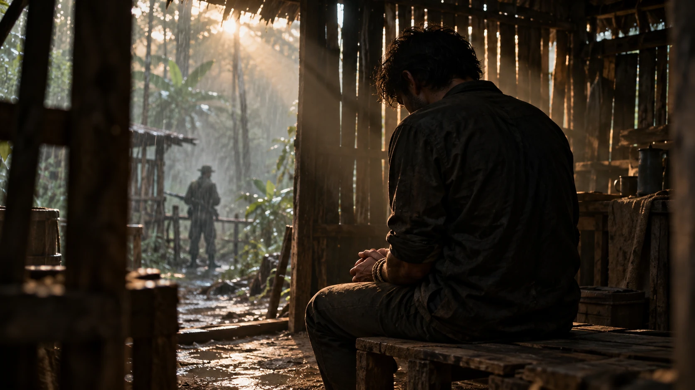

COLÔMBIA · JEP · AUTO 19/2021FARC-EP.
FARC-EP.
O sequestro como método.
Reféns políticos, deputados do Valle del Cauca e atribuições de responsabilidade examinadas pela Justiça colombiana.
VIOLÊNCIA POLÍTICA · DOSSIÊ MUNDIAL
O custo humano do poder pela força.
Assassinatos, sequestros e repressão contra candidatos e lideranças de direita, centro-direita e centro: vítimas, responsáveis e documentos sob investigação.
O MUNDO, EPISÓDIO POR EPISÓDIO
Escolha um ponto ou país para abrir os dados. O mapa mostra os registros desta pesquisa, ainda em revisão.
Clique em um ponto ou país com registros
Arraste para mover · + e − ou dois dedos para aproximar · Teclado: setas, +, − e Home
Cartografia: Natural Earth · Localidades: GeoNames (CC BY 4.0) · Fronteiras atuais como referência. Os pontos indicam localidades, não endereços exatos. Registros sem cidade ficam associados ao país. Áreas históricas não representam fronteiras dos regimes.
Fichas individuais e estimativas históricas têm unidades diferentes. Seus totais não são somados.
PESSOAS, EPISÓDIOS, FONTES
Encontre uma vítima, acompanhe a apuração e leia as fontes dentro do Observatório.
Altere a busca ou limpe os filtros para voltar ao conjunto.
CONTEXTO HISTÓRICO MUNDIAL
Conheça os regimes, os episódios e a dimensão humana de cada recorte. Cada capítulo explica o que suas cifras contabilizam.
Genocídio, massacre, fome e repressão são categorias distintas. O nazismo é apresentado em seu contexto de extrema direita. Os capítulos identificam a orientação de cada regime e não pressupõem uma origem ideológica única para toda violência.
FORMAS DE VIOLÊNCIA E AUTORIA
Explore os métodos e as organizações citadas nas fontes. A atribuição de responsabilidade é apresentada em cada ficha.

Reféns políticos, deputados do Valle del Cauca e atribuições de responsabilidade examinadas pela Justiça colombiana.
As detenções de opositores e aspirantes à Presidência documentadas pela Human Rights Watch.
BANCO DE FONTES
Fontes das fichas e dos capítulos históricos, reunidas em um único catálogo. Os resumos e quatro extratos selecionados podem ser lidos aqui.
CRITÉRIOS E TRANSPARÊNCIA
O recorte editorial orienta a pesquisa. A documentação determina o que pode ser afirmado sobre cada episódio e responsável.
A orientação da vítima não determina a do autor. Cargo, candidatura, partido, autoria e vínculo ideológico precisam de comprovação própria.
Indiciamento, denúncia, relatório de direitos humanos e condenação aparecem com a natureza da fonte. A data de consulta não atualiza uma conclusão antiga.
Uma operação pode atingir várias pessoas. Episódios diferentes da mesma vítima permanecem separados. Agregados de mensagens não são somados às ocorrências.
ANDAMENTO DA PESQUISA
Próxima etapa: concluir classificação, elegibilidade e auditoria antes da publicação.
As 39 fichas da versão publicada foram mapeadas. Vinte e duas correspondem a entradas da coleta; a de Fred Williams foi separada em dois episódios. As outras 17 permanecem no conjunto “Acervo anterior”, sem serem promovidas a fichas documentais. Os três agregados e os dois controles ficam em conjuntos próprios.
O lote da Fase 2 contém 89 fichas: 84 documentais individuais em revisão, três agregados e dois controles. Somadas às 17 referências anteriores preservadas, esta prévia contém 106 entradas de naturezas distintas. Esse total não é uma contagem de ataques.
Estatísticas gerais da ACLED, da União Interparlamentar e de outras instituições devem permanecer em módulo próprio, com população, período e definição de evento. Os números da versão anterior não foram recalculados nem atribuídos a uma corrente política nesta prévia.
A coleção atual não é amostra representativa da violência mundial e não permite concluir prevalência ou estabelecer um ranking ideológico global.